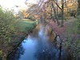

<!DOCTYPE html>
<html lang="de">
<head>
	<meta name="viewport" content="width=device-width">
	<title>Der Bürgerpark in Pankow</title>
  <link rel="stylesheet" href="../leaflet/leaflet.css" type="text/css" />
  <script type="text/javascript" src="../leaflet/leaflet.js"></script>
</head>
<body>
  <div id="mymap" style="width: 940px; height: 315px;"></div>
  <script type="text/javascript">
    let map = L.map("mymap").setView([52.57025, 13.39456], 17);
    L.tileLayer("http://{s}.tile.osm.org/{z}/{x}/{y}.png", {attribution: 'Map data &copy; <a href="https://www.openstreetmap.org/">OpenStreetMap</a> contributors, <a href="https://opendatacommons.org/licenses/odbl/">Open Database License (ODbL)</a>'}).addTo(map);
    let marker1 = L.marker([52.57089, 13.39683]).addTo(map);
    marker1.bindPopup("<br />Denkmal für den von den Nazis ermordeten Schriftsteller Julius Fučík");
    let marker2 = L.marker([52.57024, 13.3939]).addTo(map);
    marker2.bindPopup("<br />Musikpavillon im Rosengarten");
    let marker3 = L.marker([52.57051, 13.39587]).addTo(map);
    marker3.bindPopup("<br />Brücke über die Panke");
    let marker4 = L.marker([52.56934, 13.39682]).addTo(map);
    marker4.bindPopup("<br />Eingang zum Bürgerpark");
    let marker5 = L.marker([52.569698, 13.3961245]).addTo(map);
    marker5.bindPopup("<br />Gazelle");
    let marker6 = L.marker([52.5694444, 13.393611]).addTo(map);
    marker6.bindPopup("<br />Große vegetative Landschaft");
    let marker7 = L.marker([52.5707111, 13.3950722]).addTo(map);
    marker7.bindPopup("<br />Ruhender Mann und stehendes Mädchen");
    let marker8 = L.marker([52.5704917, 13.393722]).addTo(map);
    marker8.bindPopup("<br />Herbstfarben im Bürgerpark");
  </script>
</body>
</html>
